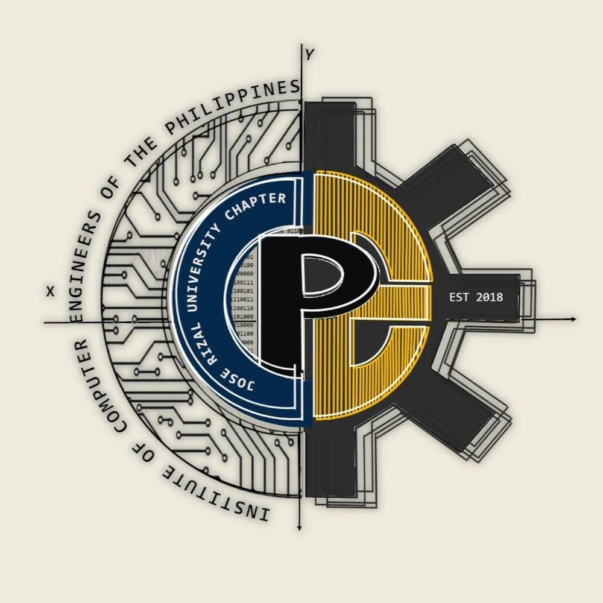

01 / UNIVERSITY CHAPTER
ICpEP.SE – JRU Chapter
Institute of Computer Engineers of the Philippines Student Edition · Jose Rizal University
- Vice President – ExternalCURRENTAugust 2025 – Present
- PresidentAugust 2024 – May 2025
- Vice President – ExternalAugust 2024 – May 2025
- Sports HeadAugust 2024 – May 2025
- Junior OfficerAugust 2022 – May 2023